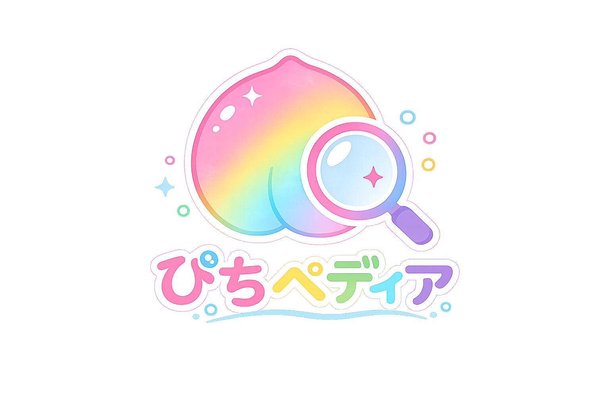

たくさんの動画と思い出を乗せて、ぴちペディアの小さな旅も出発進行！🌙✨
🚉 2020.06.28 カラフルピーチ結成
ここからカラフルピーチの物語が始まりました。
いろいろな企画やシリーズが増えて、思い出もどんどん広がっていきます。
何度も見返したくなる動画やシリーズが増えていきました。
笑ったり、驚いたり、感動したり。大切な思い出が積み重なった年。
新しい企画や挑戦で、もっと楽しい世界が広がっていきました。
これからの旅にもつながる、たくさんのワクワクが生まれました。
🚉 2026 6th Anniversary
6年間の思い出を乗せて、これからも素敵な旅が続きますように🍑🚂🌈